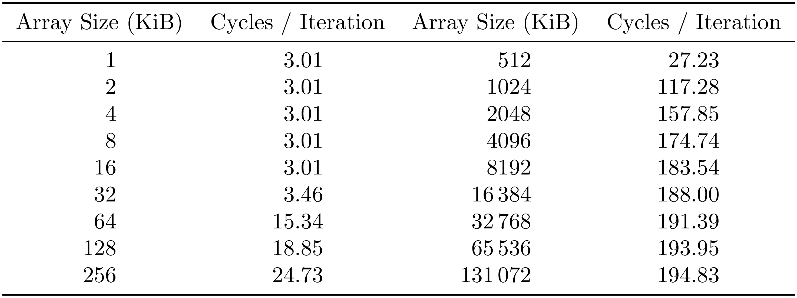
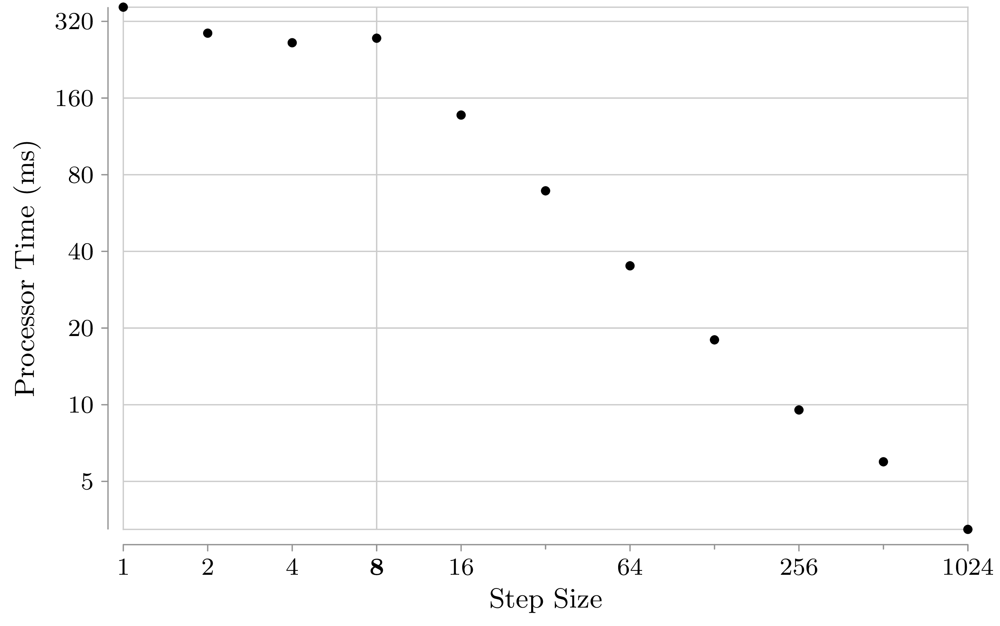
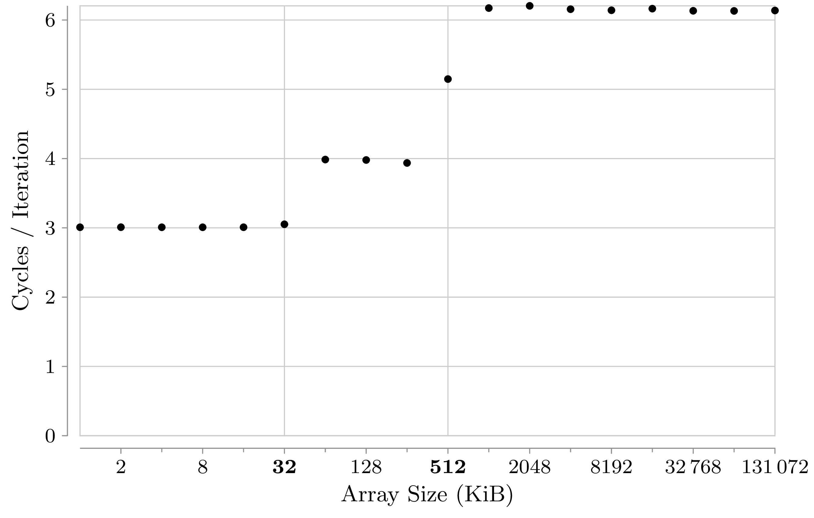
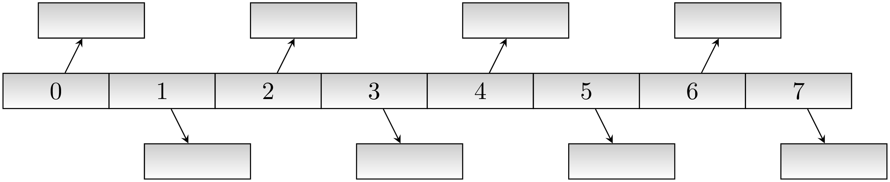
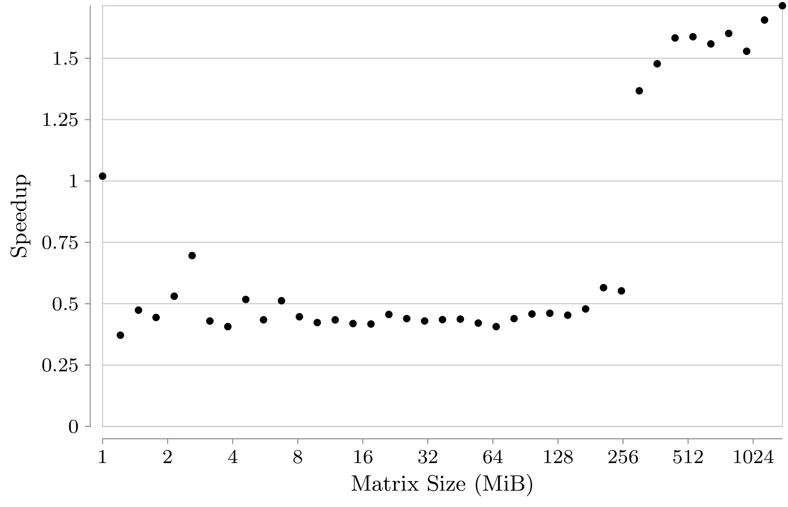
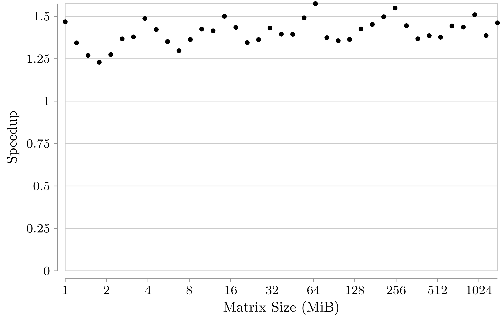

Hardware Caches and Optimization
Hardware Caches
- Store subset of data from slower storage
- Managed by hardware
- Small
- Fast
Why though?
- Fast is pricey
- SRAM
- Slow is cheap
- DRAM
- Speed of light
→ 5 cm add more than one cycle of latency.
Types
- Data cache
- Instruction cache
- Translation lookaside buffer (TLB)
Levels
Typically 2 or 3 on x86
- L1d and L1i
- Split and private
- L2
- Unified and shared
- L3
- Unified and shared
| L1 | L2 | L3 |
|---|---|---|
| 32-64 KiB | 256-512 KiB | 2-16 MiB |
Reading cache sizes
lscpu | grep 'L1\|L2\|L3'
L1d cache: 32K
L1i cache: 32K
L2 cache: 512K
| L1 | L2 | L3 | Main Memory |
|---|---|---|---|
| 3-4 | 10-12 | 30-70 | 100-150 |
Verify?
- Randomly access memory → each access is to a different cache line
- Measure CPU cycles with hardware performance counter
- Vary working set size
#define N 100000000 // 100 million
struct elem {
struct elem *next;
} array[SIZE];
int main() {
for (size_t i = 0; i < SIZE - 1; ++i) array[i].next = &array[i + 1];
array[SIZE - 1].next = array;
// Fisher-Yates shuffle the array.
for (size_t i = 0; i < SIZE - 1; ++i) {
size_t j = i + rand() % (SIZE - i); // j is in [i, SIZE).
struct elem temp = array[i]; // Swap array[i] and array[j].
array[i] = array[j];
array[j] = temp;
}
#ifndef BASELINE
int64_t dummy = 0;
struct elem *i = array;
for (size_t n = 0; n < N; ++n) {
dummy += (int64_t)i;
i = i->next;
}
printf("%d\n", dummy);
#endif
}


TLB
- Caching page tables doesn't work out: page walk through multi-level table is still slow
- How to speed up physical to virtual address translation?
→ Dedicated cache for complete virtual-to-physical address correspondence of pages
grep TLB /proc/cpuinfo
TLB size : 1024 4K pages
TLB size : 1024 4K pages
Key Concepts
Loop over an array will different increments
#define SIZE 67108864 // 64 * 1024 * 1024. The array will be 512 MiB.
int main() {
int64_t* array = (int64_t*)calloc(SIZE, sizeof(int64_t));
clock_t t0 = clock();
for (size_t i = 0; i < SIZE; i += STEP) {
array[i] &= 1; // Do something. Anything.
}
clock_t t1 = clock();
printf("%d %f\n", STEP, 1000. * (t1 - t0) / CLOCKS_PER_SEC);
}
How much faster when STEP is increased from 1 to 2, 4, 8, …?

Cache Line
- The unit of data transfer between cache and main memory
64 bytes on x86
getconf LEVEL1_DCACHE_LINESIZE; getconf LEVEL2_CACHE_LINESIZE64 64→ Load one
int, get another 15for free- Both cache and main memory can be thought of as being partitioned into cache lines
Same program as before, only the shuffle is removed
#define N 100000000 // 100 million
struct elem {
struct elem *next;
} array[SIZE];
int main() {
for (size_t i = 0; i < SIZE - 1; ++i) array[i].next = &array[i + 1];
array[SIZE - 1].next = array;
#ifndef BASELINE
int64_t dummy = 0;
struct elem *i = array;
for (size_t n = 0; n < N; ++n) {
dummy += (int64_t)i;
i = i->next;
}
printf("%ld\n", dummy);
#endif
}

Compared to Random Access
- L1 is the same: 3 cycles
- L2 only takes 1 more cycle: 4 instead of 25
- Main memory takes about 6 cycles: ~3% of random access time
- Some of this is better use of cache lines
- Only one access for 8 elements → at best down to 12.5%
Prefetching
- Technique by which CPUs predict access patterns and preemptively push cache lines up the memory hierarchy
- Predictable basically means linear
- Done asynchronously to normal program execution
→ Can almost completely hide main memory latency
Why isn't that happening?
Why isn't that happening?
Performance is still memory bound
→ Measure after adding some expensive operations
(2 integer division each iteration)

Locality of Reference
- Cache-friendliness of code depends on two main properties:
- Temporal locality
- Spatial locality
- Both are measures of how well the code's memory access pattern matches certain principles
Temporal Locality
- One access suggests another
- Once referenced memory locations tend to be used again within a short time frame
- Without this, memory hierarchies would be pretty pointless
- When a cache line is loaded but not accessed again before being evicted, the cache provided no benefit
Spatial Locality
- For each accessed memory location, nearby locations are used as well within a short time frame
- Memory is accessed sequentially
We have already seen in the last two sections that caches take advantage of both these principles by design:
- Data is loaded in blocks; subsequent accesses to locations in an already loaded cache line are basically free
- Cache lines from sequential access patterns are prefetched ahead of time
std::vector vs. std::list
- Initialize a bunch of C++ STL containers with random values
- Measure CPU time for summing all of them
- Both variants' time complexity is Θ(N)
- What is the performance difference when using
std::vectorcompared to usingstd::list?
constexpr int N = 5000;
int main() {
Container containers[N];
std::srand(std::time(nullptr));
// Append an average of 5000 random values to each container.
for (int i = 0; i < N * 5000; ++i) {
containers[std::rand() % N].push_back(std::rand());
}
int sum = 0;
std::clock_t t0 = std::clock();
for (int m = 0; m < N; ++m) {
for (int num : containers[m]) {
sum += num;
}
}
std::clock_t t1 = std::clock();
// Also print the sum so the loop doesn't get optimized out.
std::cout << sum << '\n' << (t1 - t0) << '\n';
}
Result
- Computing the sum runs
158times faster when usingstd::vector - The list has some space overhead since it stores two pointers and some more overhead because of indirection
- The more cache-friendly access pattern of
std::vectoris decisive, though
"True" OO Style
- Everything has a polymorphic class type
- Now we can store different objects that only have the same base class in one container
- We have to use pointers of course
- Our flat vector or array just turned into this: 
Abstract?
- The hidden constants separating the time complexities of two Θ(N) algorithms can be quite big because of cache effects
- Don't want to rely purely on measurements and intuition
→ Refined abstract machine models?
External Memory Model (EMM)
- Two types of memory: internal and external
- Only internal memory can be accessed directly, but its size is limited to M items
- External memory is unbounded, but can only be accessed indirectly using I/Os that load blocks of B items into internal memory
- For example, computing the sum of some input of size N has a lower bound of (⌈N/B⌉ + 1) I/Os
- Summing the linked list probably takes almost N
- The difference between
std::vectorandstd::listis at most B, the number of items a cache line can hold, which is 16
→ Pretty far off from the actual difference but more informative than saying that computing the sum takes Θ(N) time for both
Limitations of the EMM
While the concept of I/Os directly models cache lines, most other characteristics of memory hierarchies are ignored by the EMM
- prefetching, or more generally the advantages of sequential access patterns
- multi-level caches
- the lack of direct control over the contents of caches
- associativity
- TLB
More fundamentally, the model's premise is that I/Os are much more expensive than computation
- Plausible when accessing HDDs
- Not so much when transfering data between main memory and caches
→ Refined machine models which include more details?
- Yes, but further complicates mathematical analysis
- Heuristics may be used
- Measurements are still key
Cache-Oblivious Model (COM)
- Concedes most of the aforementioned problems to empirical evaluation and further increases the level of abstraction
- Algorithms don't get to know M or B
- This means an algorithm that performs well in the COM performs well across the entire memory hierarchy
- Algorithms are COM-optimal when the asymptotic number of cache misses incurred matches the problem’s lower bound in the COM
- Uses the optimal replacement strategy of evicting the cache line that won't be accessed for the longest time in the future (Bélády’s Algorithm)
Cache-Oblivious Matrix Transposition
Transpose an m × n matrix D out-of-place
for (int i = 0; i < m; ++i)
for (int j = 0; j < n; ++j)
E[j][i] = D[i][j];
- Assuming row-major layout, the reads from D are sequential memory accesses
- The writes to E aren't
- For big enough matrices, this will cause Θ(mn) cache misses
- This algorithm is cache-oblivious but not optimal
COM-Optimal Matrix Transposition
- Divide and conquer
- Recursively divide the input matrix into two equal-sized submatrices along the greater dimension
If m ≥ n (more rows than columns), let
\begin{equation*} D = \begin{bmatrix} D_1\\ D_2 \end{bmatrix} \end{equation*}and use \(D^\mathsf{T} = \begin{bmatrix} D_1^\mathsf{T} & D_2^\mathsf{T} \end{bmatrix}\) to compute the transpose
- Eventually, pairs of input and output submatrices fit into cache at the same time, at which point it doesn’t matter in what order we access the elements
- \(\Theta(1 + mn / B)\) cache misses, which is optimal
Transpose the submatrix \((d_{ij})_{i\in I,\:j\in J}\)
void transpose(int I[2], int J[2], int D[m][n], int E[n][m]) {
int num_rows = 1 + I[1] - I[0];
int num_cols = 1 + J[1] - J[0];
if (num_cols == 1 && num_rows == 1) {
E[J[0]][I[0]] = D[I[0]][J[0]];
} else if (num_cols <= num_rows) {
// Horizontally slice D into two submatrices and recurse.
transpose((int[2]){I[0], I[0] + num_rows / 2 - 1}, J, D, E);
transpose((int[2]){I[0] + num_rows / 2, I[1]}, J, D, E);
} else { /* Vertically slice D analogously... */ }
}
Speedup Achieved by COM-Optimal Matrix Transposition 
Notable Values
252 and 304 MiB are the sizes before and after the COM-optimal algorithm pulls ahead
Further Speedup 

Figure 6: "I bless your computer, my child!"